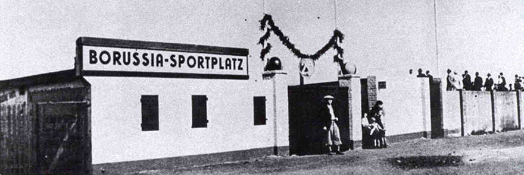
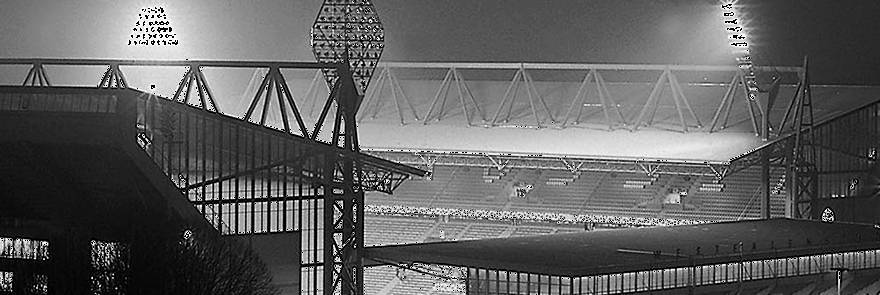

History
1909

Tumultuous scenes played out last evening in connection with the foundation of ”Ballspiel-Verein Borussia 1909“ [Ball Sports Club “Borussia 1909”] in the north east of Dortmund. Over 40 members of the youth Catholic Holy Trinity, Flurstrasse, met at 1900 in the ”Zum Wildschutz“ restaurant at Oesterholzstrasse 60, with the intention of founding ”BVB“ partly out of a love for sport but also out of anger at chaplain Hubert Dewald who is responsible for youth affairs in the trinity. Speaker and vice-president of the fledgling club, Franz Jacobi, announced, ”I have been a member of the Trinity Youth since 1902 and since 1906 we have been playing on the ”Weissen Wiese“. We footballers have been systematically attacked and defamed by our church since 1906. We can no longer put up with this. This club is absolutely necessary.“ Father Dewald tried to intervene personally to stop the founding without success. Both he and his followers were denied entry, at times forcibly. However, his appearance did see some 20 rebels back down and so just ”18“ true Borussen took part in the foundation. By the way, the name ”Borussia“ is leant from the Borussia brewery on the street Steiger Strasse. The club colours: blue and white stripes with a red inset, black shorts. The new club will now seek admittance to the West German FA
1920-1950
The council owned ”Weisse Wiese“ ground on the Wambeler Strasse yesterday gained a new name: ”Borussia Sport Park“. The club members have, over many years, with the investment of some 50000RM, developed the council-owned ground into a noteworthy 18000 capacity stadium. This initiative is a one-off in Germany. BVB speaker and honorary president Franz Jacobi once again hit the nail on the head declaring, ”The 10th of August 1924 will go down in the annals of the club as a great day. Many fans came to witness the re-naming ceremony.
Ten-time Westphalian champions Schalke 04 had to endure a bitter 3-2 defeat at the hands of Borussia Dortmund at the Schloss Strunkede stadium in Herne yesterday. Goals from Michallek, Ruhmhofer and Sandmann gave BVB victory in the final of the Westphalian championship in front of 30,000 passionate fans. The win marked an end to Schalke’s dominance in the region. A goal from Michallek shortly after half-time nullified a Hinz goal from Schalke in the first half. However, shortly afterwards Kronsbein had to pick the ball out of the net again after a free-kick from Tibulski. Heinrich Ruhmhofer, up from defence, again equalised for BVB before, with just minutes left on the clock, 17-year-old Herbert Sandmann scored the winning goal. The travelling BVB fans did not let the pouring rain stop them from celebrating with their players. BVB first played a championship match against Schalke 04 on 3 May 1925. The game, also in Herne, went to Schalke and won them a regional championship. Best Borussia player in the 4-2 defeat was the ’keeper Knipprath who held all that he could.
1950-Present
Today saw the opening of what is surely Germany’s most beautiful football stadium with the occasion being marked with a friendly match between BVB and Schalke 04 (0-3) to raise funds for the impoverished BVB. Town mayor Guenter Samtlebe and BVB president did the honours in front of a capacity 54,000 crowd. The stadium has been built with the 1974 World Cup in mind. Following that it will be home to the current regional league side Borussia Dortmund. The stadium has cost 32 million marks to build with the council having contributed just six million, the rest of the funding coming from lottery, the FA and principally from the regional government of North-Rhine Westphalia. The project has attracted a lot of criticism with many raising doubts about the whether such money could not be better spent elsewhere. Dortmund has been given games between Scotland and Zaire, Bulgaria and Holland, Holland versus Sweden as well as a semi-final (which turned out to be Brazil v Holland).
Some 30,000 BVB fans today witnessed the oddest marriage proposal in Bundesliga history. The scene was set in the Friedensplatz in Dortmund town centre. Most had gathered there to see the last Borussia Dortmund game of the 91/92 season against MSV Duisburg but Jörg Enseling, BVB fan and master butcher, saw it as an opportunity to ask Tanja those special words, ”Will you marry me?“. Happily she was only too happy to scream into the microphone that she would indeed marry him. It was also young Tanja’s 20th birthday. Some birthday present, eh? The day would have been perfect if BVB had won the Bundesliga title, but that did not happen sadly.
Whilst off the field Hans-Joachim Watzke and his team led the club to financial stability and wealth clearing some 126 million Euros worth of debt, on the field things were progressing well, too. Jürgen Klopp arrived to give the team a new impetus and purpose. Following the narrow defeat to Bayern in the Cup Final a door was opened into European competition for the first time since 2003. Klopp so impressed with his character and his desire to play ’full-throttle‘ football. And boy did his team buy into the mantra, particularly at home where in 2008/09 the team remained unbeaten for the first time in almost 20 years. 59 points meant that UEFA Cup qualification was missed by the smallest of margins.